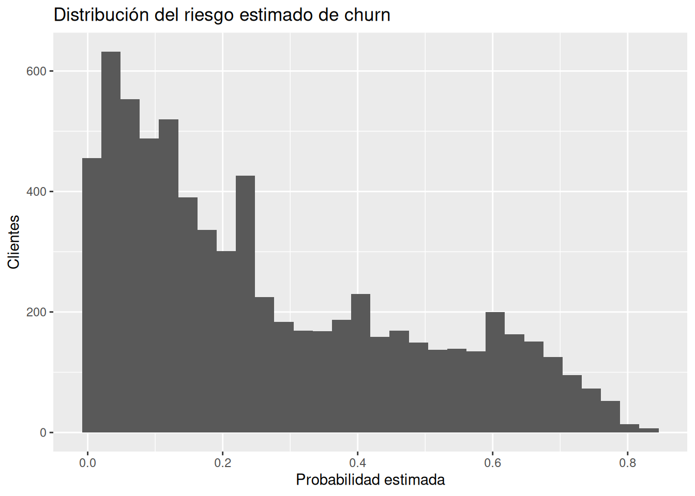
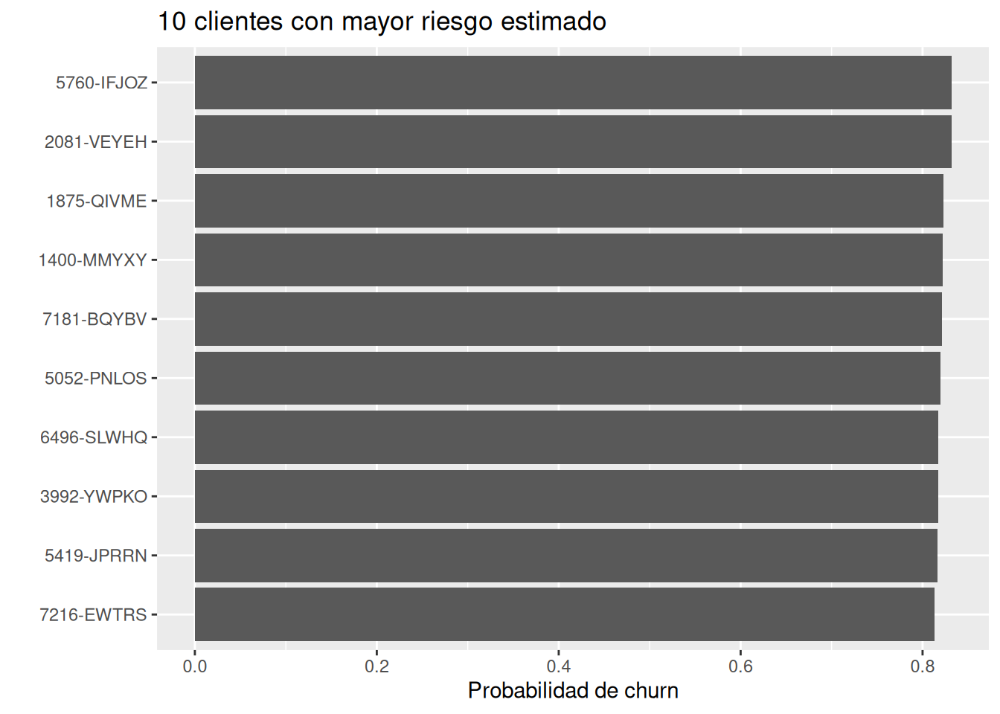
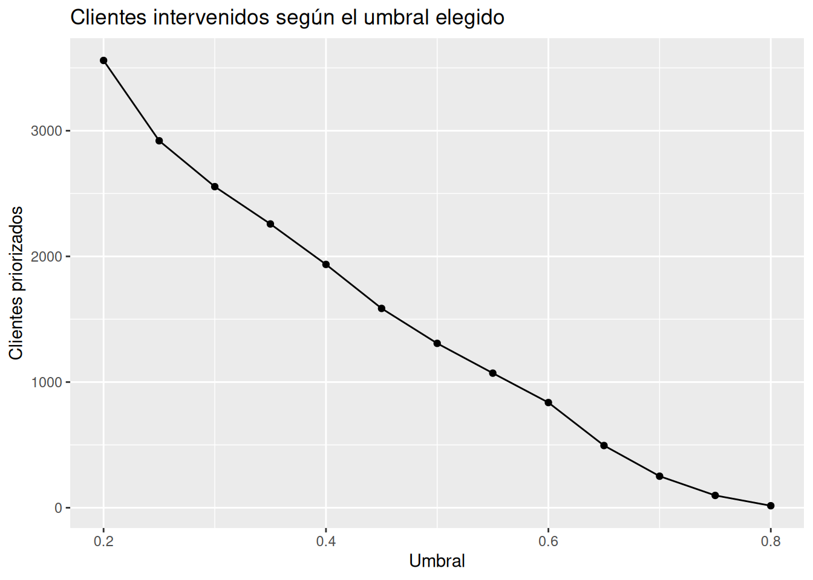

La incertidumbre no desaparece cuando tomamos decisiones.
Lo único que cambia es que ahora debemos actuar a pesar de ella.
Introducción
Durante todo este libro hemos construido una idea aparentemente sencilla, pero profundamente importante:
los datos rara vez nos entregan certezas.
Nos entregan indicios.
Nos entregan señales.
Nos entregan probabilidades.
Y aun así debemos decidir.
Las empresas deben decidir si lanzar una campaña.
Los médicos deben decidir si iniciar un tratamiento.
Los inversionistas deben decidir dónde colocar capital.
Los directivos deben decidir qué proyectos financiar.
Esperar información perfecta suele ser imposible.
Pero también puede ser costoso.
Un hospital que espera demasiado para actuar puede perder una oportunidad de salvar una vida.
Una empresa que espera demasiado para retener clientes puede perderlos para siempre.
La realidad es incómoda:
las decisiones importantes casi siempre ocurren antes de que exista certeza.
Por eso el objetivo de los modelos probabilísticos no es producir respuestas perfectas.
Su objetivo es ayudarnos a decidir mejor cuando el futuro todavía es incierto.
13.1 Del modelo a la acción
En los capítulos anteriores aprendimos a construir modelos capaces de estimar probabilidades.
Por ejemplo, usando regresión logística bayesiana pudimos estimar:
¿Cuál es la probabilidad de que un cliente abandone la empresa?
Sin embargo, conocer una probabilidad y tomar una decisión son cosas distintas.
Supongamos que un cliente tiene:
80% de probabilidad de churn
¿Qué debemos hacer?
¿Ofrecer un descuento?
¿Llamarlo?
¿Asignarle un asesor personalizado?
¿No hacer nada?
El modelo no responde estas preguntas.
El modelo únicamente proporciona información.
La decisión requiere además:
objetivos
presupuesto
estrategia
contexto de negocio
tolerancia al riesgo
Por eso es importante distinguir:
Pregunta
Responsable
¿Qué tan probable es el churn?
Modelo
¿Qué debemos hacer?
Personas
Los modelos informan decisiones.
No las reemplazan.
13.2 Un problema real de negocio
Imaginemos una empresa de telecomunicaciones.
Cada cliente que abandona la empresa representa:
pérdida de ingresos futuros
costos de adquisición de reemplazo
pérdida de participación de mercado
Por eso muchas compañías ejecutan campañas de retención.
Sin embargo, estas campañas tienen costo.
Por ejemplo:
Acción
descuento
llamada personalizada
soporte prioritario
promoción especial
Nada de esto es gratuito.
Entonces aparece una pregunta fundamental:
¿A qué clientes deberíamos intervenir?
Aquí es donde comienzan los verdaderos problemas de decisión.
13.3 La inevitabilidad de los trade-offs
La palabra trade-off puede traducirse como:
intercambio entre ventajas y costos.
Toda decisión implica renunciar a algo.
Veamos dos estrategias extremas.
Estrategia A
Intervenir sobre todos los clientes.
Ventaja:
casi nadie se nos escapa
Desventaja:
costos enormes
Estrategia B
No intervenir sobre nadie.
Ventaja:
costo cero
Desventaja:
perderemos muchos clientes
Ninguna de las dos estrategias parece razonable.
La realidad suele encontrarse en algún punto intermedio.
Aquí aparece una de las ideas más importantes del libro:
Las decisiones racionales rara vez maximizan una sola cosa.
Normalmente equilibran múltiples objetivos en conflicto.
13.4 Falsos positivos y falsos negativos
Imaginemos que intervenimos cuando el riesgo estimado de churn supera cierto umbral.
Aparecen dos tipos de errores.
Falso positivo
Intervenimos sobre un cliente.
Pero ese cliente realmente no iba a abandonar la empresa.
La intervención fue innecesaria.
La empresa gastó recursos.
Falso negativo
No intervenimos.
Pero el cliente finalmente abandonó la empresa.
Perdimos ingresos futuros.
Ambos errores tienen costo.
La pregunta no es:
¿Cómo eliminar completamente los errores?
La pregunta correcta es:
¿Qué tipo de error es más costoso para nuestro negocio?
Esta diferencia cambia completamente la estrategia.
13.5 Preparando los datos
# Cambiar el Churn a numárica binaria y cambiar la variable de cargos # totales a numérica telco <- telco %>%mutate(Churn =if_else(Churn =="Yes", 1, 0),TotalCharges =as.numeric(TotalCharges) ) %>%drop_na(TotalCharges)class(telco$Churn) # produce: "numeric"
[1] "numeric"
13.6 Construyendo un modelo simple
Utilizaremos una versión sencilla del modelo logístico desarrollado en el capítulo anterior.
# Crear un modelo para conocer cómo afecta la antiguedad y los cargos# mensuales en el churnmodelo_churn <-stan_glm( Churn ~ tenure + MonthlyCharges,data = telco,family =binomial(),chains =2,iter =1000,refresh =0)posterior_interval(modelo_churn) # produce:
Interpretación: Es plausible que, independientemente de los cargos mensuales, la antiguedad se asocia a una disminución del churn; e independientemente de la antiguedad, los cargos mensuales se asocian a un aumento del churn.
El objetivo aquí no es mejorar el modelo.
El objetivo es utilizar probabilidades para tomar decisiones.
13.7 Estimando riesgo individual
Calculamos la probabilidad estimada de churn para cada cliente.
# Calcular 1000 probabilidades (simulaciones) de churn para # cada uno de los 7032 clientesriesgo_promedio <-posterior_epred(modelo_churn)# Mostrar la primera simulación (de las 1000) y sólo 5 clientes# (de los 7032)riesgo_promedio[1, 1:5] # produce:
# Crear una nueva variable con el riesgo promedio de churntelco <- telco %>%mutate(riesgo_churn =colMeans(riesgo_promedio) )# Mostrar las 6 primeras filas (de las 7032) y las últimas columnas telco[1:6, -20:-1] # produce:
Ahora cada cliente tiene una probabilidad estimada.
Por ejemplo:
Cliente
Riesgo
A
0.12
B
0.37
C
0.82
Esto ya es información accionable.
13.8 Visualizando la distribución del riesgo
# Histograma que muestra la distribución del riesgo de churn en el # modelo ggplot(telco, aes(riesgo_churn)) +geom_histogram(bins =30 ) +labs(title ="Distribución del riesgo estimado de churn",x ="Probabilidad estimada",y ="Clientes" )

Interpretación
Este gráfico responde una pregunta importante:
¿Cómo se distribuye el riesgo en nuestra cartera de clientes?
Probablemente observaremos:
muchos clientes de bajo riesgo
algunos clientes de riesgo intermedio
un grupo más pequeño de alto riesgo
La realidad suele ser gradual.
No existen dos grupos perfectamente separados.
13.9 Del riesgo a la acción
Supongamos que la empresa decide intervenir únicamente cuando:
Probabilidad de churn > 70%
# Intervenir cuando el riesgo de churn es mayor al 70%telco <- telco %>%mutate(intervenir_70 = riesgo_churn >0.70 )# Imprimir las 6 primeras observaciones (de las 7032) y las últimas # filastelco[1:6,-20:-1] # produce:
# Conocer a cuantos clientes de los 7043 hay que intervenirtelco %>%count(intervenir_70) # produce:
# A tibble: 2 × 2
intervenir_70 n
<lgl> <int>
1 FALSE 6781
2 TRUE 251
13.10 ¿Y si cambiamos el umbral?
Ahora probemos un criterio más agresivo.
# Crear una nueva variable con los clientes que tienen un riesgo de# churn mayor al 40%telco <- telco %>%mutate(intervenir_40 = riesgo_churn >0.40 )# Conocer cuantos clientes tienen un riesgo de churn mayor al 40%telco |>count(intervenir_40) # produce:
# A tibble: 2 × 2
intervenir_40 n
<lgl> <int>
1 FALSE 5096
2 TRUE 1936
# Mostrar los 10 clientes con mayor riesgotelco_ordenado %>%ggplot(aes(reorder(customerID, riesgo_churn), riesgo_churn ) ) +geom_col() +# Mostrar columnascoord_flip() +# Cambiar el eje para poder ver los ID'slabs(title ="10 clientes con mayor riesgo estimado",x ="",y ="Probabilidad de churn" )

Este gráfico ayuda a responder:
Si sólo pudiéramos actuar sobre 100 clientes, ¿cuáles deberían ser prioridad?
13.12 Recursos limitados y priorización
En la práctica:
el presupuesto es limitado
el tiempo es limitado
los equipos son limitados
Por eso muchas organizaciones no buscan:
intervenir a todos.
Buscan:
intervenir donde el beneficio esperado sea mayor.
La priorización es una consecuencia natural de la escasez de recursos.
# Crear una tabla con los umbrales y los clientes intervenidosescenarios <-map_dfr( umbrales,function(u){tibble(umbral = u,intervenidos =sum(telco$riesgo_churn > u) ) })escenarios # produce:
# Visualizar los clientes intervenidos según el umbral elegidoggplot( escenarios,aes(umbral, intervenidos)) +geom_line() +geom_point() +labs(title ="Clientes intervenidos según el umbral elegido",x ="Umbral",y ="Clientes priorizados" )

13.14 Decisiones imperfectas
Una tentación frecuente es creer:
si el modelo es suficientemente bueno, desaparecerán los errores.
Esto nunca ocurre.
Incluso excelentes modelos:
se equivocan
simplifican la realidad
omiten variables
enfrentan cambios futuros
La incertidumbre nunca desaparece.
Simplemente cambia de forma.
Por eso la madurez analítica consiste en aceptar algo incómodo:
una buena decisión puede producir un mal resultado.
Y también:
una mala decisión puede producir un buen resultado por azar.
Debemos evaluar decisiones por la calidad de la información disponible en el momento de decidir.
No únicamente por el resultado observado después.
13.15 Probabilidades y decisiones
Las probabilidades son útiles porque permiten pensar en grados.
No obligan a clasificar inmediatamente.
Por ejemplo:
Riesgo
0.15
0.42
0.67
0.89
Estos números representan distintos niveles de preocupación.
Permiten:
priorizar
asignar recursos
planificar intervenciones
Las probabilidades no eliminan la incertidumbre.
La hacen visible.
13.16 Incertidumbre ética y humana
Existe otra dimensión importante.
Los modelos trabajan con datos.
Pero las decisiones afectan personas reales.
Un cliente no es únicamente una probabilidad.
Es una persona.
Toda automatización tiene limitaciones.
Toda predicción puede equivocarse.
Por eso los modelos deben utilizarse como herramientas de apoyo.
No como sustitutos completos del juicio humano.
Las mejores organizaciones combinan:
evidencia cuantitativa
experiencia profesional
criterio humano
Reflexión bayesiana
Desde el inicio del libro hemos repetido una idea:
la incertidumbre no es un defecto del análisis.
Es una característica natural del mundo.
El enfoque bayesiano no promete eliminarla.
Promete algo más modesto y más útil:
aprender de la evidencia disponible para tomar decisiones más razonables.
Las distribuciones posteriores no nos dicen exactamente qué ocurrirá.
Nos muestran qué resultados son más plausibles.
Y esa diferencia es fundamental.
Ejercicios
Ejercicio 1
Explique con sus propias palabras la diferencia entre:
estimar una probabilidad
tomar una decisión
Ejercicio 2
Describa un ejemplo de falso positivo en una campaña de retención.
¿Cuál sería su costo?
Ejercicio 3
Describa un ejemplo de falso negativo.
¿Por qué podría ser más costoso?
Ejercicio 4
Repita el análisis utilizando:
30%
50%
70%
como umbrales de intervención.
¿Qué cambia?
Ejercicio 5
Construya un gráfico que muestre únicamente los 50 clientes con mayor riesgo estimado.
Ejercicio 6
Suponga que cada intervención cuesta $10.
¿Cuántos clientes intervendría con cada umbral?
Ejercicio 7
Reflexione:
¿Es preferible cometer más falsos positivos o más falsos negativos?